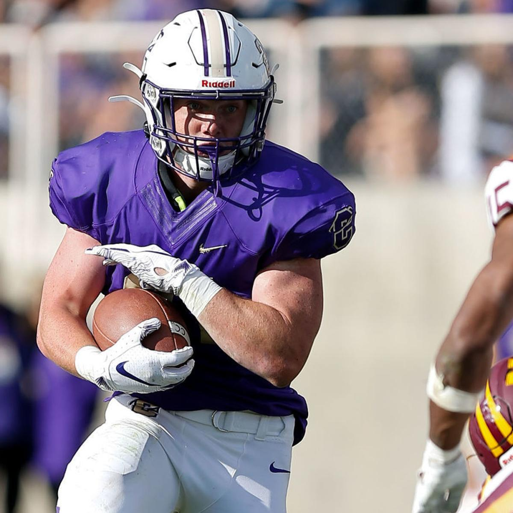
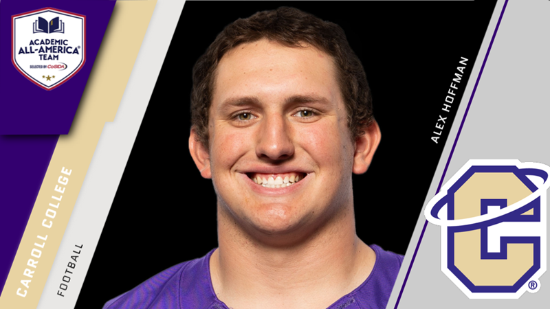
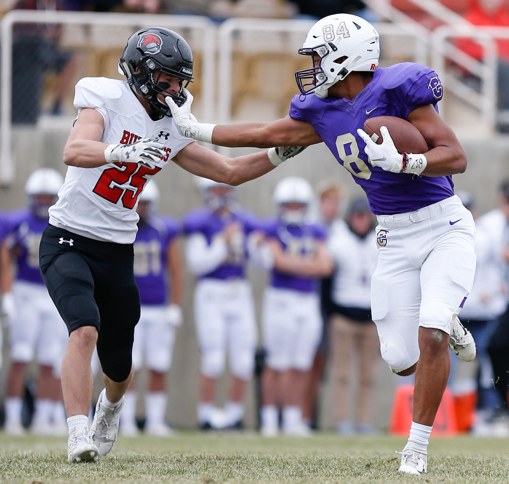

Accolades from 2019 (freshman year): Named first team all-conference as a true freshman... Earned two Frontier Conference Offensive Player of the Week Awards... Scored a team-high 16 touchdowns... Led team with 1,076 rushing yards on 174 attempts (6.2 yards per rush) and scored 15 rushing touchdowns... Caught seven passes for 71 yards and a score... Named Academic All-Conference...

Accolades from 2019 (junior year): First team all-conference offensive lineman... Helped the Saints' rushing attack become the second-ranked unit in the Frontier ... CoSIDA Academic All-American... Academic all-conference...

Collins is going to have a huge year this upcoming season. Now with a solidified starting role on the team, Collins's stats will go crazy. Accolades from 2019 (sophomore year): Second team all-conference tight end... Tied for third on the team with 36 points... Caught 17 passes for 348 yards and six touchdowns...